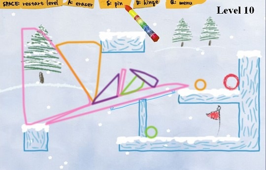
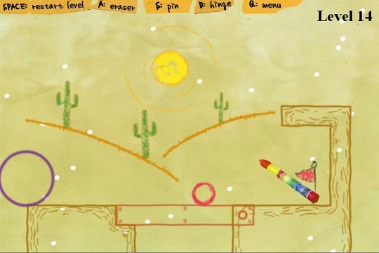
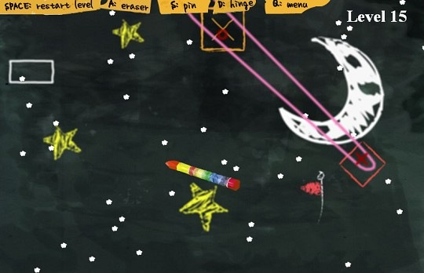

这两天放松的时候玩一个很有意思的FLASH游戏，游戏规则很简单，把目标物体弄到指定位置就可以过关了。怎么弄呢？用一只笔在画面中画出各种简单的几何体，通过简单的物理碰撞，杠杆，铰链达到目标。所有的东西都靠你自己画了，挺适合小破孩开发智力的。 游戏地址：http://armorgames.com/play/1177/magic-pen
这个网站还有许多好玩的FLASH小游戏，大家可以去打发时间。 如果网络速度太慢，你想下载到自己电脑里随时慢慢玩，我们暂时把它弄了下来可以让你下载。玩的时候，先打开游戏，然后鼠标点右键，选择播放（一次就行啦）不然它自己不会播放，毕竟这个是从别人网站上弄下来的。自己娱乐就好，不要干别的用途。FLASH如果提示要与网络通信，点击确定就好了。
下载地址：http://www.coletree.com/upload/magicpen.swf


